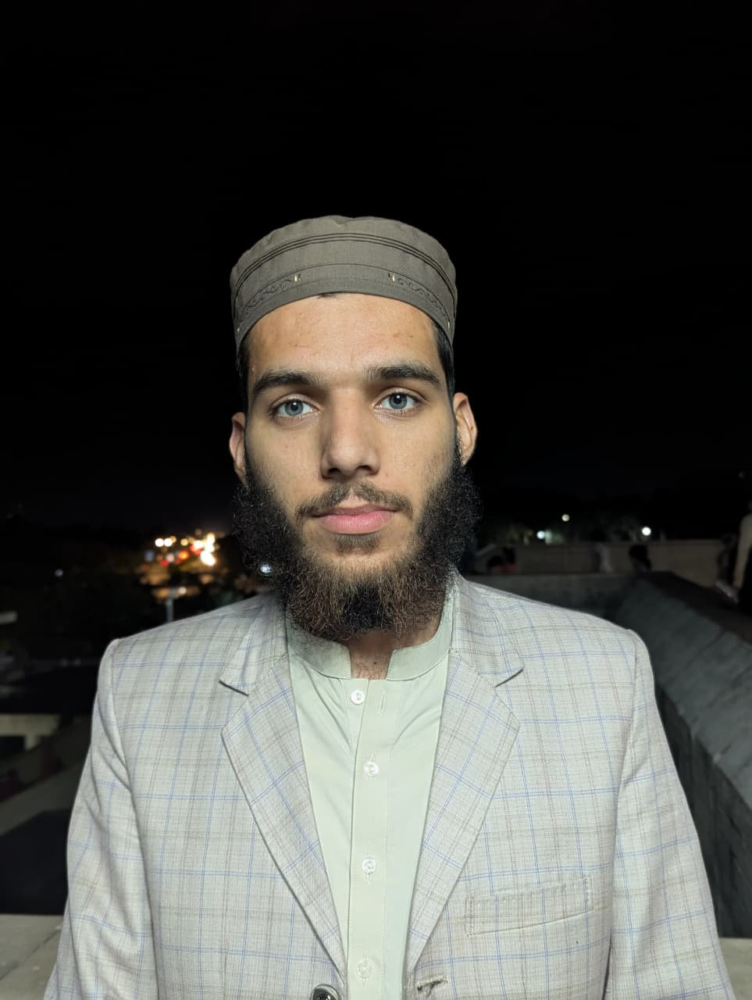

A dedicated and knowledgeable Islamic scholar with a strong foundation in classical Islamic sciences through Dars-e-Nizami, complemented by a formal undergraduate degree in Islamic Studies. Seeking to contribute meaningfully in Islamic education, research, and community service by combining traditional scholarship with contemporary academic learning.